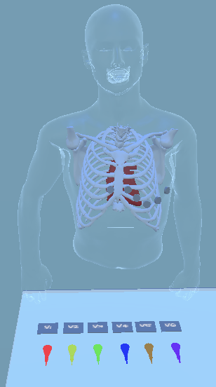
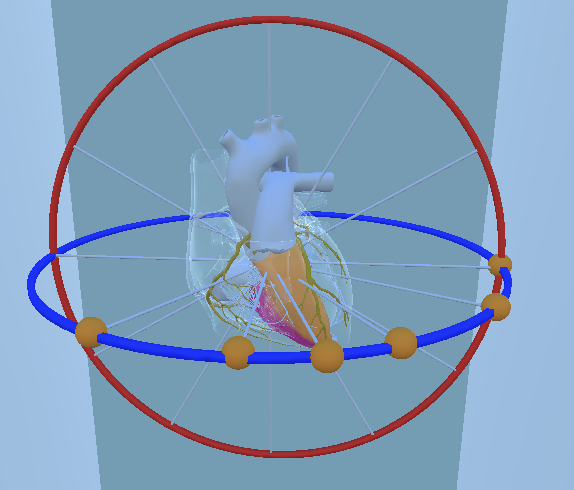
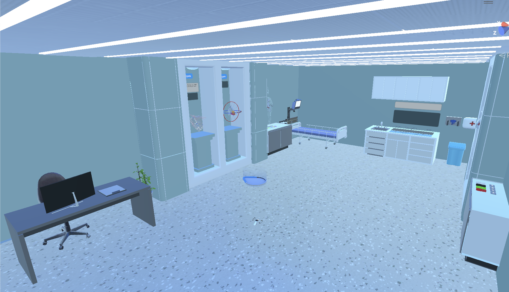
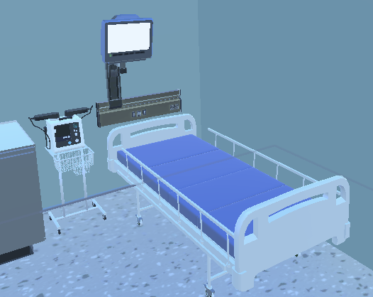

PROJECT / VIRTUAL REALITY · MASTER’S PROJECT
MediSim.
An innovative VR-based ECG simulation designed to enhance medical professionals’ and students’ ECG interpretation skills through interactive, visual, and theoretical learning experiences.
The VR-based ECG simulation aims to enhance ECG interpretation skills through visual, theoretical, and auditory elements. Development incorporated theoretical content, interactive 3D objects, quizzes, and case scenarios based on feedback from medical education challenges. Testing showed positive educational impact, with 100% of participants recommending the application, though content effectiveness and user experience were noted as areas for improvement. Future plans include expanding content, enhancing user experience with tutorials and real-environment simulations, and conducting larger-scale testing with before-and-after comparisons to evaluate effectiveness.
Research Question:
Can a VR-based simulation be effective in improving users' ECG interpretation and clinical skills?
Development
Engine: Unity 3D
Virtual Reality
Build Device: Meta Quest 2
When: June 24 - August 24 (3 Months)
Dissertation Project Document
© 2024. All rights reserved.



